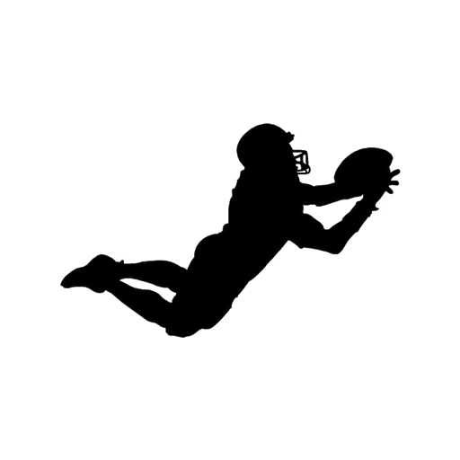

<ion-header [translucent]="true" class="ion-no-border">
  <ion-toolbar>
    <ion-buttons [collapse]="true" slot="start">
      <ion-button fill="clear" shape="round" routerLink="/cronome">
        <ion-icon slot="icon-only" name="chevron-back-outline"></ion-icon>
      </ion-button>
    </ion-buttons>
    <ion-title class="ion-text-center">
      Intercepciones
    </ion-title>
    <ion-buttons [collapse]="true" slot="end">
      <ion-button fill="clear" shape="round" routerLink="/cronome">
        
      </ion-button>
    </ion-buttons>
  </ion-toolbar>
</ion-header>

<ion-content [fullscreen]="true">
  <ion-header collapse="condense">
    <ion-toolbar>
      <ion-title size="large">crointercepciones</ion-title>
    </ion-toolbar>
  </ion-header>
</ion-content>
